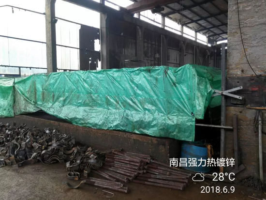
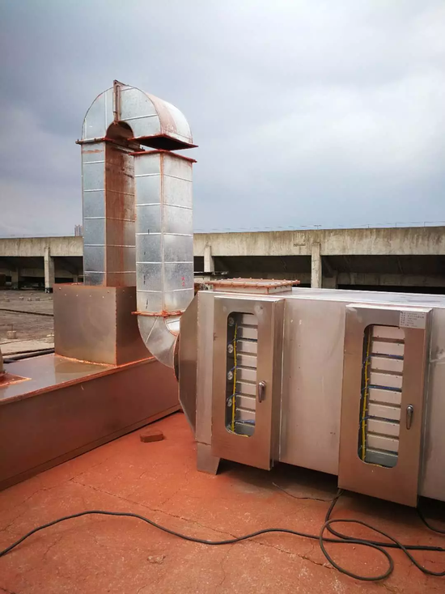

最近，一则中纪委的通报不出意外地在网络上流传开来。
不过，这一次并不是抓老虎，而是就生态环境问题问责一批基层官员。这则中央纪委的通报，曝光了6起生态环境损害责任追究典型问题，涉及天津、河北、江苏、安徽、重庆和甘肃六省市，被通报人数达40多人，都是县区乡镇一级的领导干部。值得注意的是，这是中央纪委首次就该领域的责任追究典型问题进行通报。
作为党中央的纪律检查机关，用中纪委通报的形式来对付这些基层的失责官员，是不是杀鸡用了牛刀？中纪委不仅管党纪还管起了环保，这又是什么节奏？
现象
不妨从现象中找答案。
从2015年12月至今，中央已经展开了四批环保督察“全覆盖”工作，对全国31个省（区、市）存在环境问题进行了一次全面摸底。督察进驻期间，共问责党政领导干部1.8万多人，受理群众环境举报13.5万件，直接推动解决群众身边的环境问题8万多个。
不过，从某种意义上来说，第一轮“全覆盖”督察其实更像是一次对地方党委、政府生态环境保护工作的全面体检，但光有体检，却没有“看病抓药”“复查”肯定是不够的。
所以，今年5月30日，6个中央环保督察组分别进驻河北、河南等十省（区），开展第一轮中央环境保护督察“回头看”工作。
这一看，可了不得，问题全来了。
以近期媒体密集报道的内蒙古和林格尔县一家木器加工厂为例。明明在2016年开展的第一轮中央环保督察中，该企业就已经被责令整改，且在同年向社会公示已办结。但前两天，中央第二环保督察组又收到了群众举报，说这家企业有大气和噪音污染，且无环评手续。
最后经过调查，这家工厂在第一轮中央环保督察中被举报、被查封之后，根本没停产。最近停产一周，也是为了“迎接”督察组。
广西北海的一家镍业公司被群众举报后，北海市言之凿凿：公司手续齐全，群众举报不实。结果呢？近期中央环保督察“回头看”发现：该公司有大量强碱性冶炼废渣，堆填侵占滩涂约600亩。可谓触目惊心。
在江西南昌，群众投诉企业排放污染气体，相关责任主体仅搭块塑料布就算完成整改。群众投诉塑料厂夜间生产排废气，企业就由夜间改为白天生产；在广东省，为了“解决”河边污水排放口污染物浓度严重超标的问题，当地水务部门官员就采取了“调水稀释”的应急方式。恩，水质临时达标，就算完成任务了嘛。
这种“假整改”“表面整改”糊弄的可是中央来的督察组。还好这种“猫捉老鼠”的把戏中央也是心知肚明，所以要搞“回头看”，杀个“回马枪”。
说到这，各位岛友恐怕已经明白，中央环保督察完全是比照中央巡视来的。

搭块塑料布就算整改（来源：生态环境部网站）

假整改：晚上排放废气改白天（来源：生态环境部网站）
性质
中央对于环保重要性的强调，不用赘述。尤其是十八大以来，环保更是习总重点抓的工作，还成为了全面建成小康社会倒计时阶段的“三大攻坚战”。
十九大报告将生态文明建设称之为中华民族永续发展的“千年大计”。而在上个月刚刚结束的全国生态环境保护大会上，生态文明建设又被上升到中华民族永续发展的“根本大计”的高度。
习总有句话说得好，生态环境是关系党的使命宗旨的重大政治问题，也是关系民生的重大社会问题。
可见，在中央看来，生态环境问题绝不是一个业务问题，也不是环境部一家的事。既然是政治问题，那就事关全局，站位就非常高了。
从中纪委的这次通报中，我们也可以发现，被处理的40多人中，除了环保系统的官员外，还有很多分管领导，甚至党政一把手。与党风廉政建设一样，环保问题同样被明确为主要领导的主体责任问题，是需要一把手亲自抓的大事。如果出问题，同样不能免责，甚至终身追责。
这是这次中纪委通报传递的明确信号。